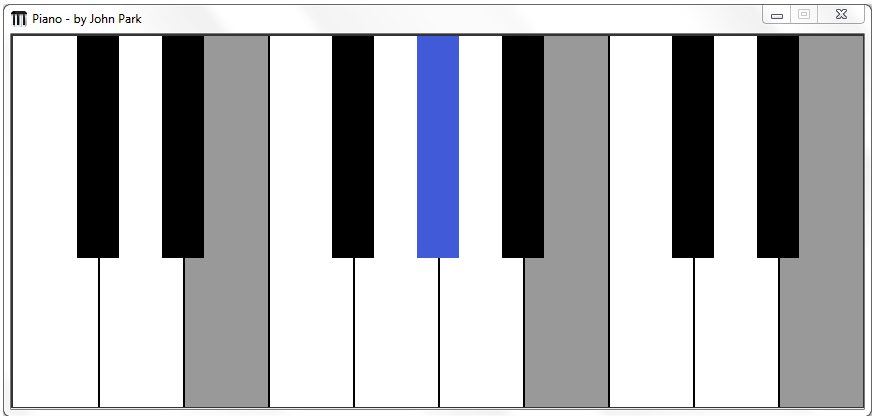

Piano v1.0.0
Created by John Park
This application was made in 2012 and improved in 2013. It was a final project for Foundations of Computer Science taught at TJHSST in 2011-2012.
Download: Piano v1.0 - Park.zip

^SCREENSHOT - not an applet^
You can play any note on the piano just like a full real 88 key piano. Feel free to try out each of the features!
Instructions:
1) Download the project here: Piano v1.0 - Park.zip
2) Extract the folder 'Piano' to anywhere.
3) Open folder and run 'Piano.exe'.
4) Enjoy!
You must have Java JRE version 1.7 or higher.
In case you are wondering, this file is completely virus-free! See for yourself at VirusTotal.com 100% Clean Scan.
Currently, this program is only made for Windows OS and has compatibility issues with Mac OS X. It can be run on OS X using Wine, but it may have bugs.
Controls
Keys:
Display key overlay: F1
Piano keys (white): A, S, D, F, G, H, J, K, L, ;
Piano keys (black): W, E, T, Y, U, O, P
Octave changes:
Shift left: Z
Shift right: C
Center octave: X
Damper pedal: Hold shift or space bar while playing
Other: Hold ` key to show beta feature panel (work in progress)
-
-
You may not distribute copies of this software through any means without permission in advance from me. Contact me at johnjp15@gmail.com.